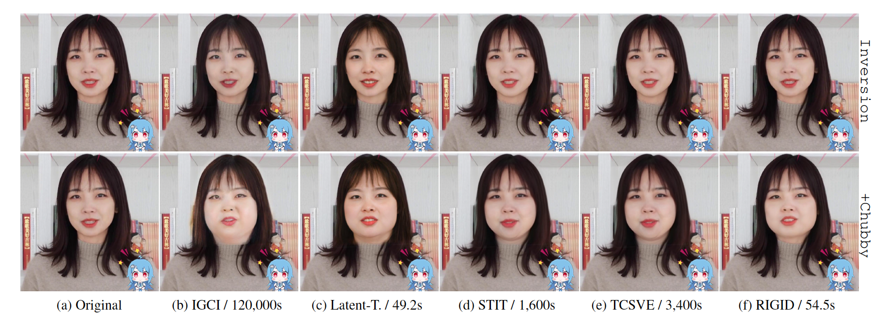
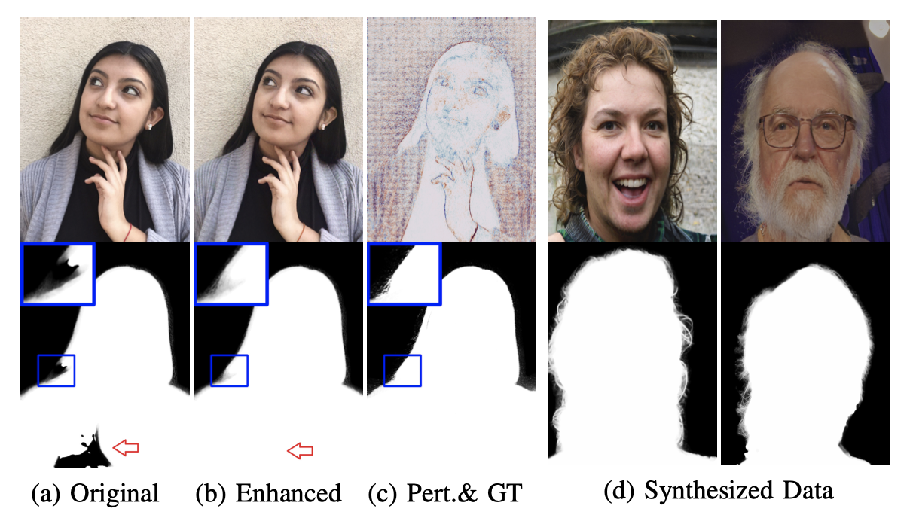
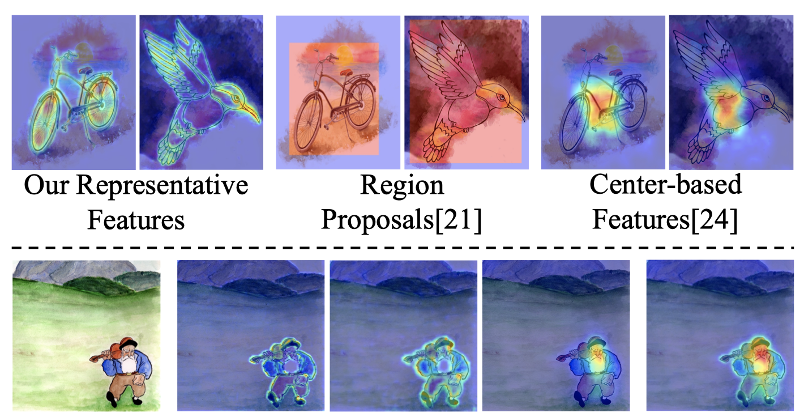

Yangyang Xu
|
|
{kind=link}
Biography
I am currently working as a postdoctoral with Prof. Ping Luo at The University of Hong Kong. I am also an adjunct researcher at Shanghai AI Laboratory, working with Prof. Yu Qiao and Prof. Bo Dai. Before that, I receive my doctorate degree under the supervision of Prof. Shengfeng He and Prof. Xuemiao Xu at the South China University of Technology(SCUT).
My research mainly focuses on generative models and their applications, including image/video generation, editing, translation, and super-resolution. I am also interested in image/video matting, zero/few-shot learning, and 2D/3D action recognition.
News
- 07/2023: One Paper is accepted by ICCV.
- 02/2023: One Paper is accepted by TOG.
- 07/2022: One Paper is accepted by TIP.
- 03/2022: One Paper is accepted by CVPR.
- 12/2021: One Paper is accepted by TIP.
- 12/2021: Join the department of computer science, HKU, and start the postdoctoral phase.
- 08/2021: Passed the oral defense and became a Dr.
- 07/2021: One Paper is accepted by ICCV.
- 06/2021: One Paper is accepted by TIP.
Publications
|  | RIGID: Recurrent GAN Inversion and Editing of Real Face Videos Yangyang Xu, Shengfeng He, Kwan-Yee K. Wong, and Ping Luo ICCV 2023 PDF / Supp / Project |

|
Parsing-Conditioned Anime Translation: A New Dataset and Method Zhansheng Li+, Yangyang Xu+, Nanxuan Zhao, Yang Zhou, Yongtuo Liu, Dahua Lin, and Shengfeng He ACM TOG 2023 PDF / Supp / Code |
|  | Self-supervised Matting-specific Portrait Enhancement and Generation Yangyang Xu, Zeyang Zhou and Shengfeng He IEEE TIP 2022 PDF / Supp / Code |

|
High-resolution Face Swapping via Latent Semantics Disentanglement Yangyang Xu, Bailin Deng, Junle Wang, Yanqing Jing, Jia Pan and Shengfeng He CVPR 2022 PDF / Supp / Code |

|
Pro-PULSE: Learning Progressive Encoders of Latent Semantics in GANs for Photo Upsampling Yang Zhou+, Yangyang Xu+, Yong Du, Qiang Wen and Shengfeng He IEEE TIP 2022 PDF / Supp / Code |

|
Background Matting via Recursive Excitation Junjie Deng+, Yangyang Xu+, Zeyang Zhou and Shengfeng He ICME 2022 PDF / Supp / Code |
|  | Representative Feature Alignment for Adaptive Object Detection Shan Xu, Huaidong Zhang, Xuemiao Xu, Xiaowei Hu, Yangyang Xu, Liangui Dai, Kup-Sze Choi, and Pheng-Ann Heng IEEE TCSVT 2022 PDF / Supp / Code |

|
From Continuity to Editability: Inverting GANs with Consecutive Images Yangyang Xu, Yong Du, Wenpeng Xiao, Xuemiao Xu, and Shengfeng He ICCV 2021 PDF / Supp / Code |

|
Multi-view Face Synthesis via Progressive Face Flow Yangyang Xu, Xuemiao Xu, Jianbo Jiao, Keke Li, Cheng Xu and Shengfeng He IEEE TIP 2021 PDF / Erratum / Code |

|
Holistically-Associated Transductive Zero-Shot Learning Yangyang Xu, Xuemiao Xu, Guoqiang Han, and Shengfeng He IEEE TCDS 2021 PDF / Supp / Code |

|
Invertible Grayscale with Sparsity Enforcing Priors Yong Du, Yangyang Xu, Taizhong Ye, Qiang Wen, Chufeng Xiao, Junyu Dong, Guoqiang Han, Shengfeng He ACM TOMM 2021 PDF / Supp / Code |

|
Deep Texture-Aware Features for Camouflaged Object Detection Jingjing Ren, Xiaowei Hu, Lei Zhu, Xuemiao Xu, Yangyang Xu, Weiming Wang, Zijun Deng and Pheng-Ann Heng IEEE TCSVT 2021 PDF / Supp / Code |

|
Transductive Zero-shot Action Recognition via Visually-connected Graph Convolutional Networks Yangyang Xu, Chu Han, Jing Qin, Xuemiao Xu, Guoqiang Han, and Shengfeng He IEEE TNNLS 2020 PDF / Supp / Code |

|
Unsupervised Domain Adaptation via Importance Sampling Xuemiao Xu, Hai He, Huaidong Zhang, Yangyang Xu, and Shengfeng He IEEE TCSVT 2019 PDF / Supp / Code |

|
Ensemble One-Dimensional Convolution Neural Networks for Skeleton-Based Action Recognition Yangyang Xu, Jun Cheng, Lei Wang, Feng Liu and Dapeng Tao IEEE SPL 2018 PDF / Supp / Code / |

|
Human Action Recognition by Learning Spatio-Temporal Features With Deep Neural Networks Lei Wang, Yangyang Xu, Jun Cheng, Jianqin Yin and Jiaji Wu IEEE Access 2018 PDF / Supp / Code |

|
DTA: Double LSTM with temporal-wise attention network for action recognition Yangyang Xu, Lei Wang, Jun Cheng and Jiaji Wu ICCC 2017 PDF / Supp / Code |
Professional Activities
Reviewer
- NeurIPS, ICML, SIGGRAPH, SIGGRAPH Asia, CVPR, ICCV, ECCV, AAAI, P&G.
- IEEE TIP, IEEE TNNLS, Pattern Recognition, Neural Computing, IEEE SPL.
Seminar Report
-
Graph Convolutional Neural Networks for Zero-shot Action Recognition
at City University of Hong Kong, Hong Kong. 2018.12.Research on Several Problems Based on Generative Adversarial Models
at Tencent, Shenzhen. 2021.11Image and Video Editing Based on Generative Adversarial Networks
at Shanghai AI Lab, Shanghai. 2022.06Volunteer
- Chinagraph 2018
© Yangyang Xu | Last updated: July, 2023.